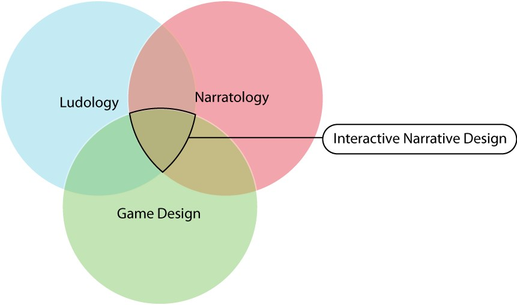

Formalism Narratology



Senior Seminar in
Literary Criticism and Theory
TOPICS
Story, Events, Plot, Discourse, Narrative,
Polyphony,
Focalization,
Defamiliarization,
Russian Formalism
Other Formalisms
Formalism into Structuralism
Prague School
Readings
Fowles, 150-200
Culler, 82-94
Formalism Narratology
9/7/10
Culler identifies some core questions of narratology: Who speaks? Who speaks to whom? Who speaks when? Who speaks what language? Who speaks with what authority?
In thinking through Fowles’s novel, we find nearly each of these questions complex and complicated.
What are the narrative structures of theory:
“even the exposure of narrative as rhetoric has the structure of a narrative: it is a story in which our initial delusion yields to the harsh light of truth and we emerge sadder but wiser, disillusioned but chastened.”
If we agree with this statement by Culler, can this be equally said of that which we consider narrative traditionally as to theory itself? Is there an underlying structure of theory as narrative? Is there a literariness to theory?